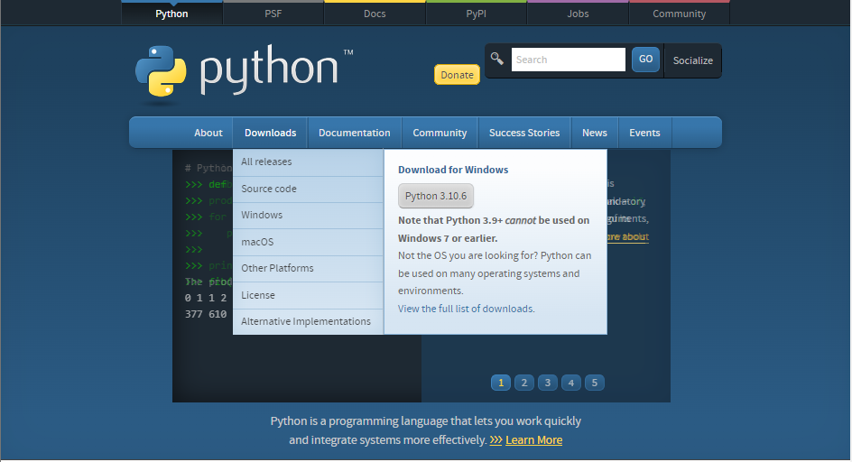
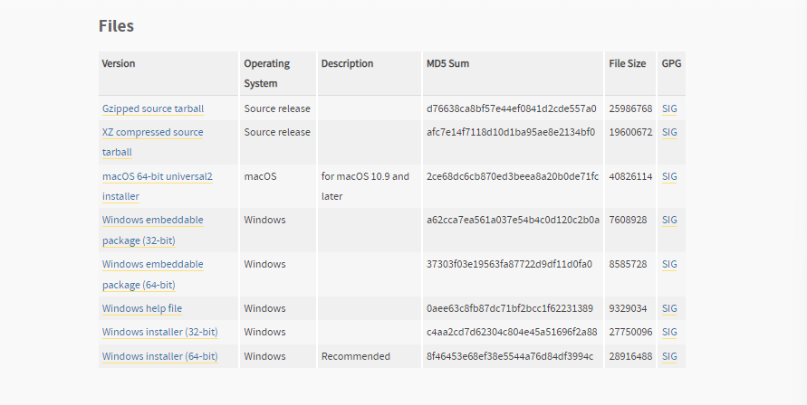
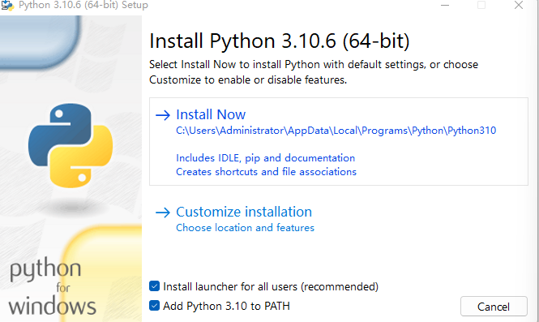
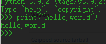

Python官网首页 点击上方Downloads选择windows

以最新版3.10.6为例
网页最下方点击windows 64 installer (64-bit)

勾选Add Python 3.10 to PATH,点击Install Now 安装

安装完成后打开cmd 输入python -V 会显示版本信息
在cmd中输入python,当出现>>>时表示python进入交互式编译环境
输入 print("hello,world) 点击回车会输出hello world
